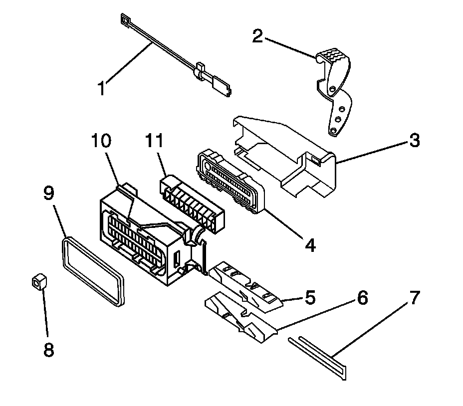
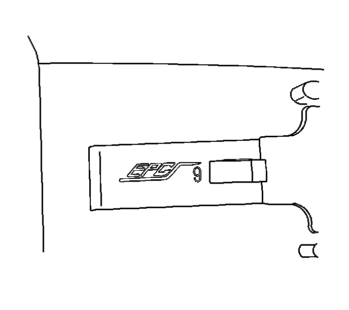
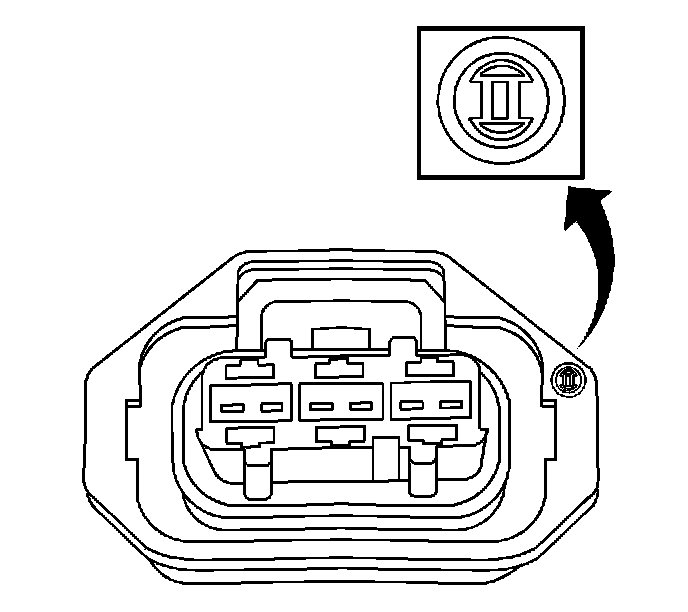
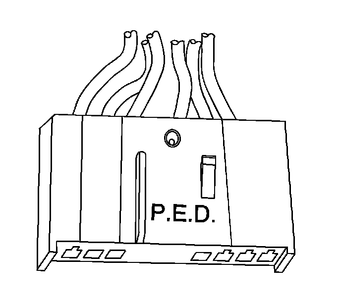
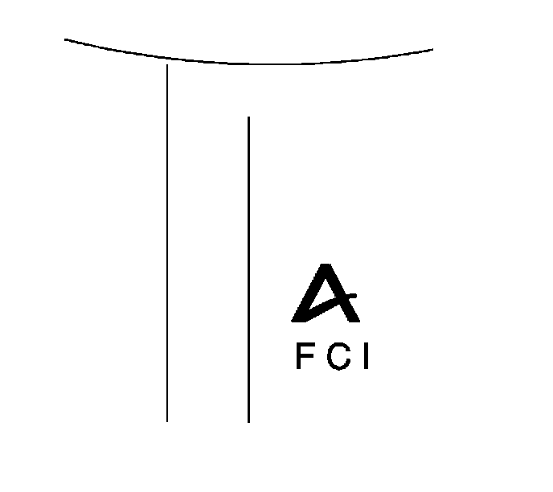
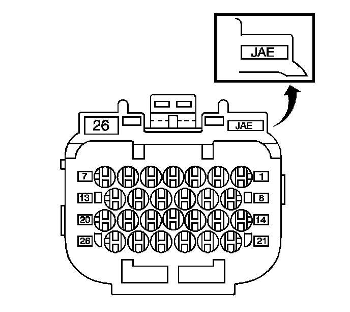
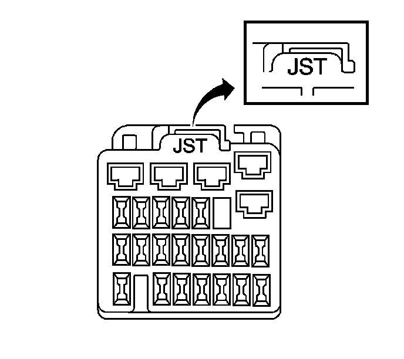
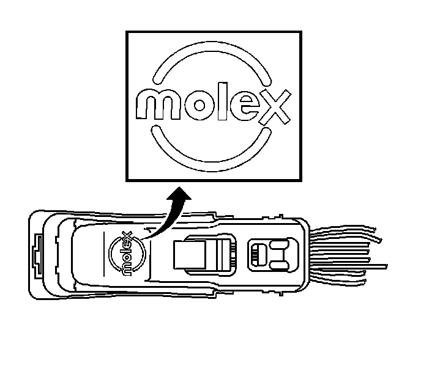
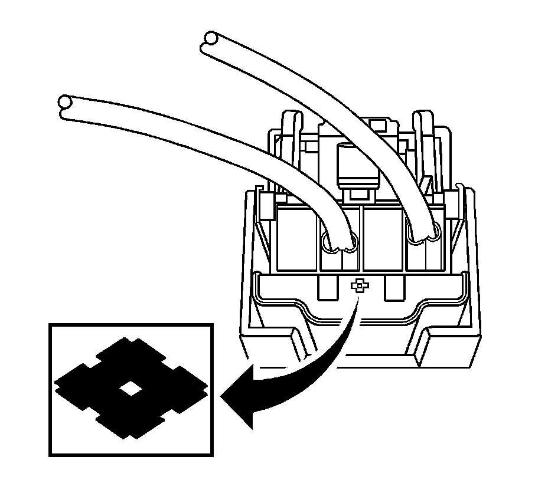
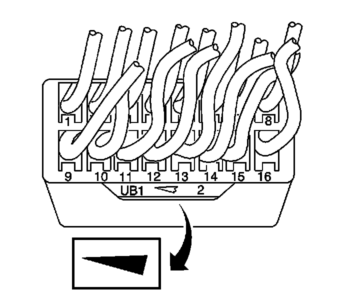

Connector Repairs
Connector Repairs
Connector Repairs contains a list of all connector repairs. The connector repairs are listed by the connector manufacturer and then by connector type. If the technician cannot identify the manufacturer of the connector, refer to Identifying Connectors below. Knowing the connector manufacturer will assist in finding the correct connector repair from the following list:
* Connector Position Assurance Locks (Component Tests and General Diagnostics)
* Terminal Position Assurance Locks (Component Tests and General Diagnostics)
* Bosch Connectors (BSK) (Component Tests and General Diagnostics)Bosch Connectors (0.64) (Component Tests and General Diagnostics)Bosch Connectors (2.8 JPT) (Component Tests and General Diagnostics)Bosch Connectors (ECM) (Component Tests and General Diagnostics)
* Delphi Connectors (Weather Pack) (Component Tests and General Diagnostics)Delphi Connectors (Push To Seat) (Component Tests and General Diagnostics)Delphi Connectors (Pull To Seat) (Component Tests and General Diagnostics)Delphi Connectors (Micro-Pack 100W) (Component Tests and General Diagnostics)Delphi Connectors (Micro .64) (Component Tests and General Diagnostics)Delphi Connectors (12-Way) (Component Tests and General Diagnostics)
* Tyco/AMP Connectors (CM 42-Way) (Component Tests and General Diagnostics)Tyco/AMP Connectors (Sensor) (Component Tests and General Diagnostics)Tyco/AMP Connectors (0.25 Cap) (Component Tests and General Diagnostics)Tyco/AMP Connectors (43-Way) (Component Tests and General Diagnostics)Tyco/AMP Connectors (Door Module) (Component Tests and General Diagnostics)
* Yazaki Connectors (2-Way) (Component Tests and General Diagnostics)Yazaki Connectors (16-Way) (Component Tests and General Diagnostics)
* Repairing Connector Terminals (Component Tests and General Diagnostics)
Connector Anatomy

1 - Connector Positive Assurance (CPA)
2 - Assist Lever
3 - Wiredress Cover
4 - Seal Strain/Relief
5 - Slide Left Hand
6 - Slide Right Hand
7 - Terminal Positive Assurance (TPA)
8 - Terminal Positive Assurance (TPA)
9 - Connector Seal
10 - Connector Housing
11 - Inner Connector
Identifying Connectors
Knowing the connector manufacturer is helpful when trying to locating the correct connector repair procedure. There are many different connector designs used on GM vehicles and it is sometimes difficult to identify the connector manufacturer. The information in this document should help with the identification of connector manufactures.
The following connector manufacturers make most of the connectors found in GM vehicles:
* AFL/EPC (Alcoa Fujikura Ltd./Engineered Plastics Components)
* Bosch
* Delphi
* FCI (Framatome Connectors International)
* JAE (Japan Aviation Electronics)
* JST (Japan Solderless Terminals)
* Kostel
* Molex
* Sumitomo
* Tyco/AMP
* Yazaki
Identifying the manufacturer of a connector is often difficult. When trying to determine the manufacturer of a connector, look for specific identifying marks that are unique to that connector supplier. Most of these identify marks are hard to find or see. Check the connector carefully and refer to the information below for pictures and descriptions of connector identification markings.

* Most of AFLs connectors have EPC on their connector body. Some of the smaller connectors will not have any markings on them.

* In some cases Bosch will actually be printed on the connector. If Bosch does not appear on the connector, look for the Bosch logo. The Bosch logo is a circle with a blunted arrow inside. This logo can appear anywhere on the connector and is often very small.

* In some cases Delphi will actually be printed on the connector. If Delphi is not printed on the connector, look for PED. In both cases there is no specific orientation for Delphi or PED and they can appear anywhere on the connector.

* FCI connectors may have the FCI logo on their connectors. The logo is the letters FCI with an "A" above it.

* JAE connector have JAE in small letters on their connectors.

* JST connectors have JST in small letters on their connectors, similar to that above. The location of the logo will vary with the connector size and style.
* Kostel has an "LK" with a circle around it. These connector are usually used as a transmissions connection.

* Most Molex connectors will have the Molex logo on the dresscover of the connector. In some cases the connectors may have MX followed by another letter. The third letter indicates where the connector was made. A connector with MXD is a Molex connector made in Detroit.

Sumitomo has a unique symbol on their connector and possibly a part number. The symbol is similar to that of a diamond lying on its side, similar to that shown. The logo could appear anywhere but the most common place is at the wire side of the housing.
* Tyco/AMP has many different and unique connector designs. Some may or may not have identifiable marks on them.

* Yazaki has a wedge or arrow shape, similar to that shown.